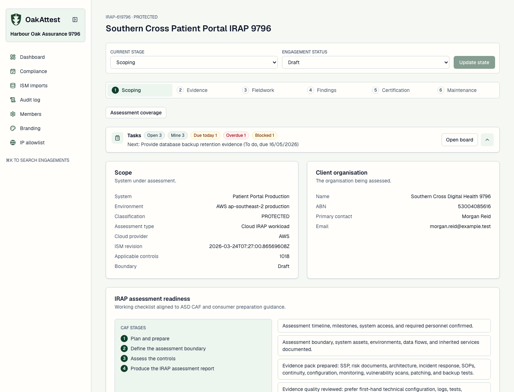
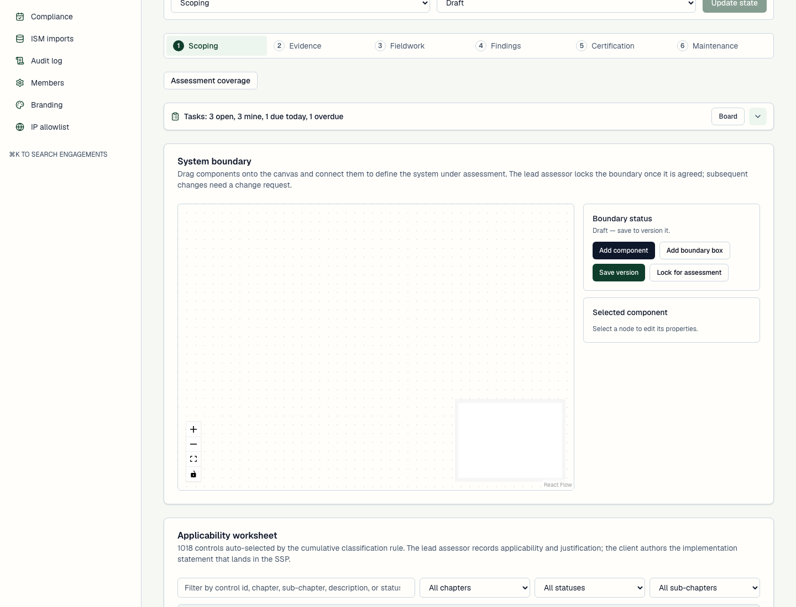

Assessment boundary first
Capture system metadata, environments, service components and boundary diagrams before the engagement drifts into loose evidence collection.
Built for Australian IRAP assessment work
OakAttest is open-source IRAP assessment software for ASD-registered assessor firms and the client organisations they assess. It keeps Information Security Manual (ISM) control work structured from organisation setup through scoping, evidence, fieldwork, findings, certification, Essential Eight assessment and ongoing compliance maintenance.

Why this matters
IRAP work depends on boundaries, ISM applicability, evidence quality, client collaboration, vendor evidence, residual risk, auditability and exportable records such as System Security Plan material and SSP Annex data that can support an authorisation decision. OakAttest is shaped around those practical tasks, with self-hosted deployment as a first-class option.
Capture system metadata, environments, service components and boundary diagrams before the engagement drifts into loose evidence collection.
Import ACSC ISM OSCAL releases, manage revisions and record applicability decisions with chapter and sub-chapter filtering.
Generate SSP material, certification records, Excel workbooks and boundary imagery from the same controlled engagement data.
Analyse common Microsoft 365 and Google Workspace CSV exports to suggest ISM and Essential Eight mappings without declaring automatic compliance.
IRAP lifecycle coverage
Create the assessor organisation, invite colleagues, define client contacts, assign roles and establish engagement scope.
Model environments, data centres, services, inherited provider controls and system boundaries for AWS, Azure or Google Cloud workloads up to PROTECTED.
Record implementation statements, assessment methods, evidence quality, limitations, Essential Eight maturity, enterprise SaaS exports, vulnerability imports and CVE or SBOM data.
Link findings to ISM controls, record residual risk and prepare authorisation package material without losing the audit trail.
Australian cyber security fit
OakAttest is for teams looking for an open-source IRAP assessment tool, ISM compliance workspace, assessor collaboration system or self-hosted alternative to generic GRC software. It supports OFFICIAL: Sensitive and PROTECTED assessment workflows, Cloud IRAP context, Essential Eight visibility, assessment boundaries, SSP bundle exports, certification readiness checks, reassessment scheduling and audit-ready evidence history.
Product screenshots
These captures come from the app's disposable Playwright data set: organisation onboarding, administration, ISM imports, engagement scope, task ownership, dashboard notifications, findings, certification, Essential Eight, enterprise evidence guidance, assessment coverage and ongoing compliance.

What it handles
Deployment posture
OakAttest is designed for deployments where assessment material, evidence and audit history need clear ownership. It does not claim that ASD certifies, endorses or approves a system. It helps assessor firms and clients collect and structure the artefacts that inform the relevant authorisation decision under Australian Government cyber security guidance.
Next.js, PostgreSQL, Drizzle, Better Auth, S3-compatible storage and React Email.
Run locally with Docker, migrate and seed the database, then start the app with npm.
AGPL-3.0-or-later, suitable for open collaboration and transparent assessment tooling.